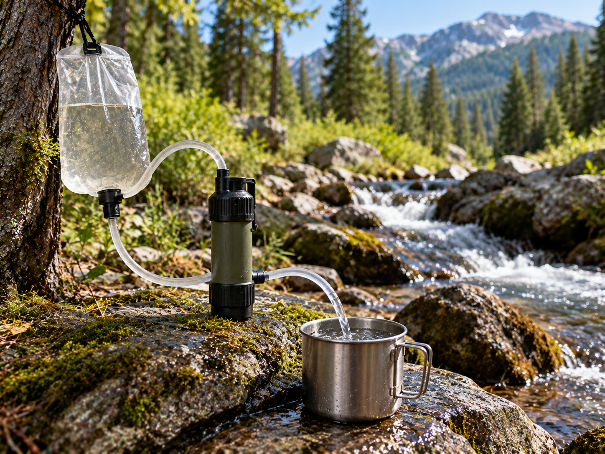

Water Filtering

Portable water filters can help remove certain contaminants from outdoor water.
What It Is
Water filtering passes water through a filter designed to remove certain particles and microorganisms.
When to Use It
A portable water filter can be useful while hiking or camping when treated drinking water is not available.
How It Works
Water passes through the filter before it reaches a clean container. Different filters remove different contaminants, so the manufacturer's instructions are important.
Materials Needed
- Portable water filter
- Water source
- Clean container
Source
Water safety information: CDC - Making Water Safe in an Emergency